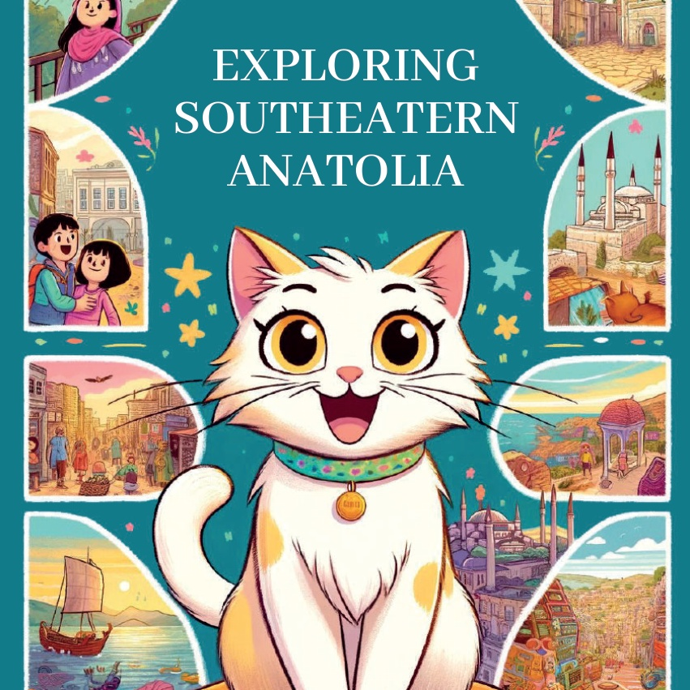
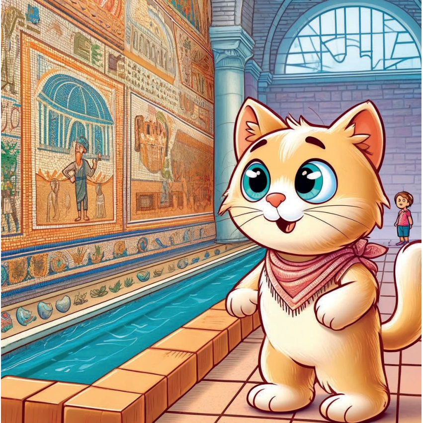
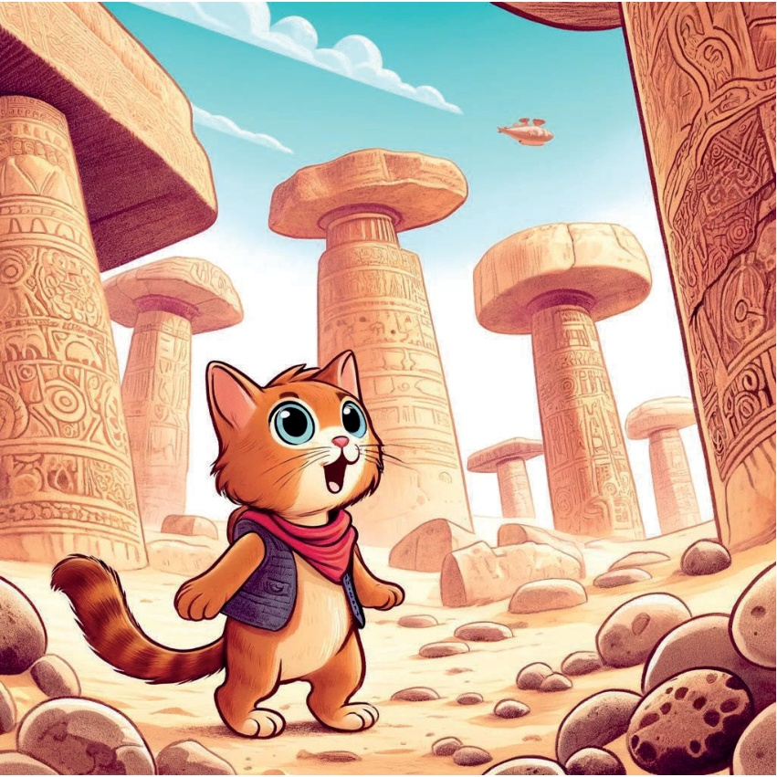
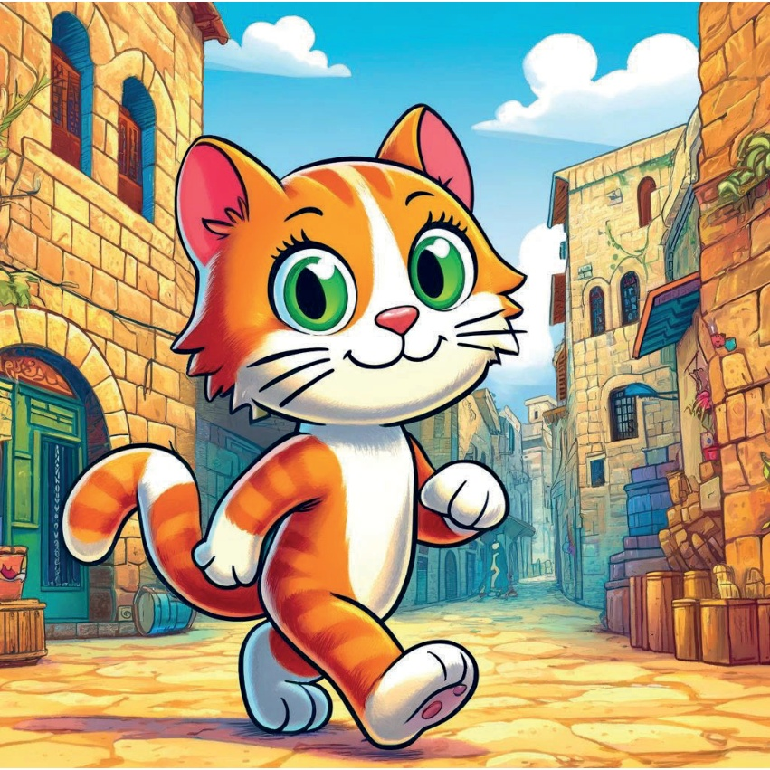
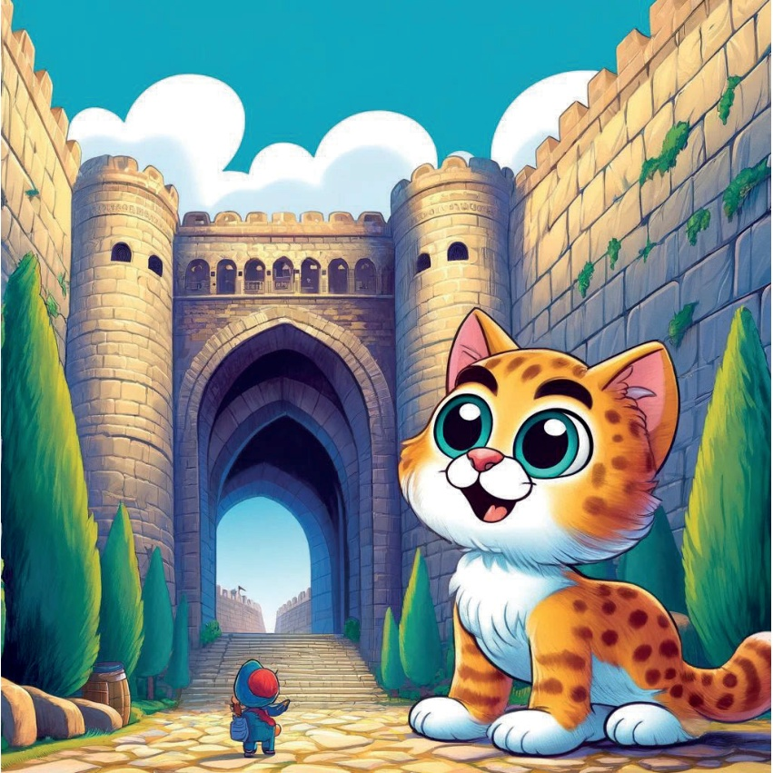
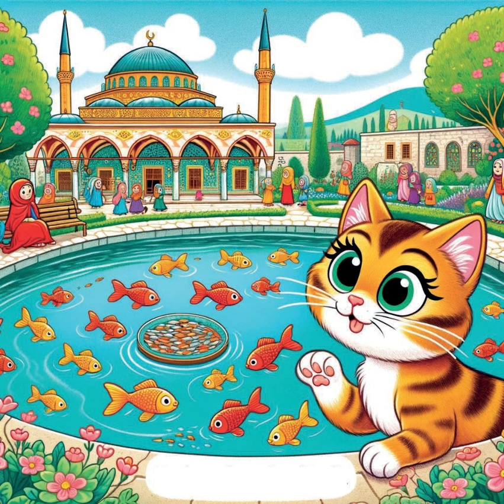
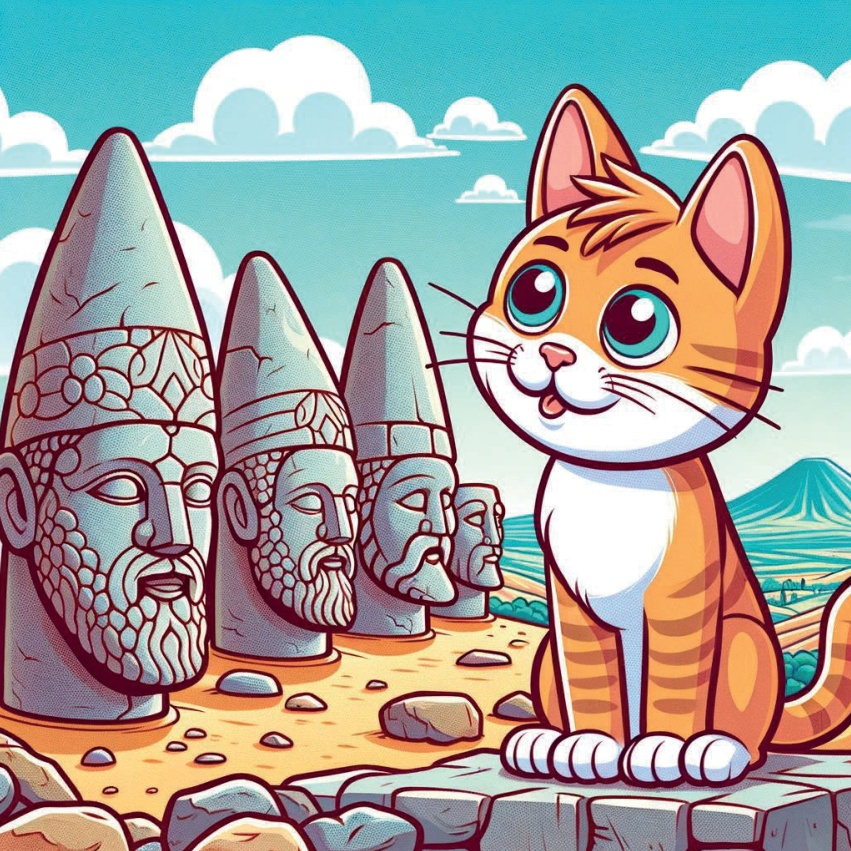
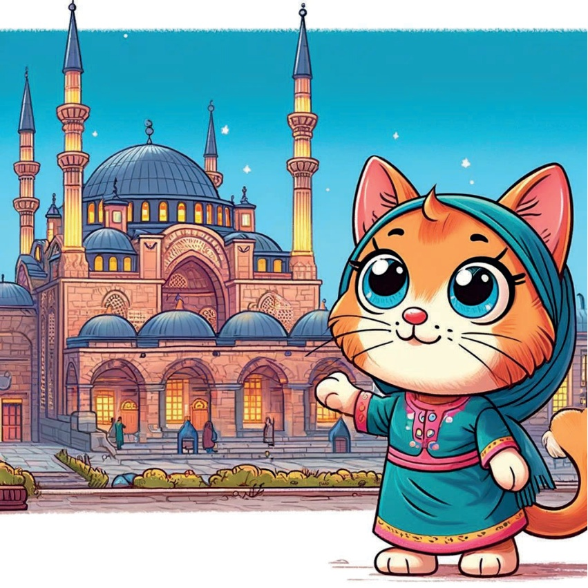
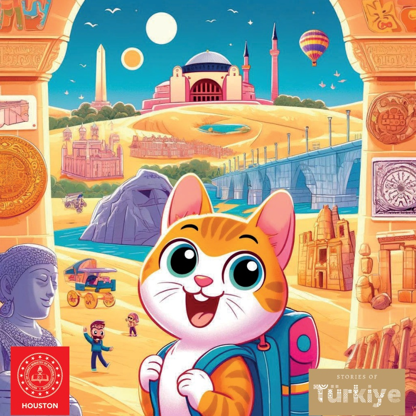

1

2

3
Dawno, dawno temu żył sobie ciekawski kocur o imieniu Karamel, który uwielbiał odkrywać różne miejsca. Pewnego dnia postanowił podróżować przez region Południowo-Wschodniej Anatolii w Turcji, aby poznać jego wyjątkową kulturę, historię i piękne przyrodę.
4
5
Gaziantep: Zeugma Mueseum mozaik Karamel'in ilk durağı Gaziantep oldu. Orada Zeugma Mozaik Mueseum'u ziyaret etti. Zorlu mozaikler ve eski sanat eserleri görmek çok ilginçti.
6

7
Şanlıurfa: Następny przystanek, Göbekli Tepe. Karamel pojechała do Şanlıurfa i zwiedziła starożytne Göbekli Tepe. Tajemnicze kamienne budowle i historyczne znaczenie tego miejsca bardzo ją zainteresowały.
8

9
Mardin: Stare Miasto.
W starym mieście Mardin, Karamel spacerował wąskimi uliczkami. Charakterystyczna architektura z kamienia i bogata historia tego miejsca były bardzo ciekawe.
10

11
Diyarbakır: Mury Miasta.
Karamel pojechała do Diyarbakır, gdzie zobaczyła wspaniałe mury miasta. Stare mury, pełne historii, były naprawdę piękne.
12

13
Şanlıurfa: Balıklıgöl.
W Şanlıurfa, Karamel odwiedził święte miejsce Balıklıgöl. W tej lagunie pełno jest świętych ryb, a wokół niej rozciągają się piękne ogrody. To bardzo spokojne i magiczne miejsce.
14

15
Adıyaman: Kolejnym przystankiem Karamel z Mount Nemrut było Mount Nemrut w Adıyaman, gdzie zobaczyła ogromne posągi na szczycie. Posągi i rozległy widok były zapierające dech w piersiach.
16

17
Şırnak: Cizre Camii.
W Şırnak, Karamel odwiedził Cizre Wielką Cami. Piękna meczet i spokojne okolice były idealnym miejscem do zadumy.
18

19
Serce Karamel było pełne nowych wrażeń i wspomnień. Zrozumiała, jak różnorodny i fascynujący jest region Południowo-Wschodniej Anatolii. Wróciła do domu, marząc o kolejnej przygodzie.
20
21

22